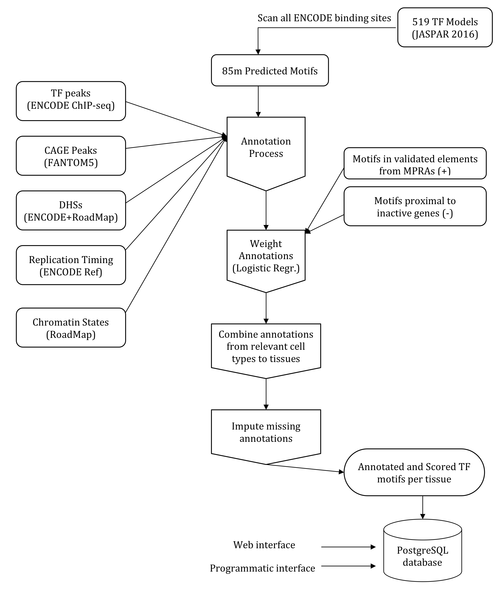

Untitled
Half-time presentation
Karolina Smolinska-Garbulowska
supervisor: Jan Komorowski
Upppsala, 2019-12-09

Rule-network (RN) construction


VisuNet
- an R package
- Publicly available on GitHub: https://github.com/komorowskilab/VisuNet

funMotifs freamwork
funMotifs content:
- Annotations for motifs of ~500 TFs in 15 tissues
- Annotations:
- TF peak,
- DNase1 site,
- Chromatin state,
- Replication domain,
- …
Definition of candidate functional regulatory mutations (CFRMs):
In the tissue(s) relevant for the variant.
- Overlap a TF motif and change entropy by at least |0.3|
- TF expression > 0
- DNaseI peak
- Functionality score > 2.5 or TF-peak


Manuscript 1

- SNPs and short indels from 1000 Genome project (HU & KS)
- eQTL SNPs from the GTEx data portal v7 (HU & KS)
- SNPs from GWAS Catalogue and SNPs in LD with GWAS SNPs ()(KS)
HS - Husen M. Umer
KS - Karolina Smolinska
Comparison to existing annotation databases
2,219,330 eQTL SNPs were annotatied using funMotifs, RegulomeDB and HaploReg.
| funMotifs | RegulomeDB | HaploReg | |
|---|---|---|---|
| Genome wide | No | Yes | Yes |
| Functionality score | Yes | Yes | No |
| Functional annotations | Yes | Yes | Yes |
| Tissue Specificity | Yes | No | No |

RegulomeDB: Boyle,A.P., et al. (2012)
HaploReg: Ward,L.D., et al. (2016)
Overview of the candidate functional GWAS SNP rs8103622 in breast tissue